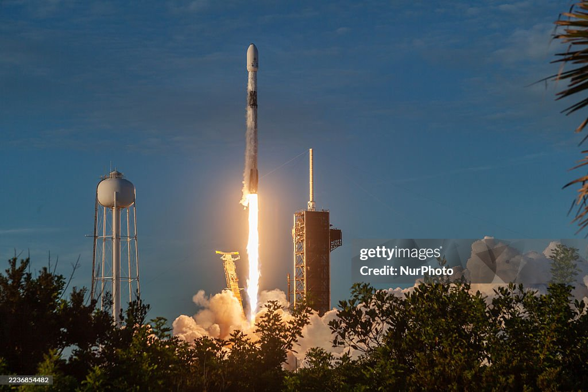

Falcon 9
Lanzador orbital de dos etapas diseñado para transportar satélites y la nave Dragon. Destaca por su primera etapa reutilizable.
- Uso: cargas comerciales, ISS, constelaciones
- Clave: recuperación de primera etapa
- Enfoque: coste y frecuencia
